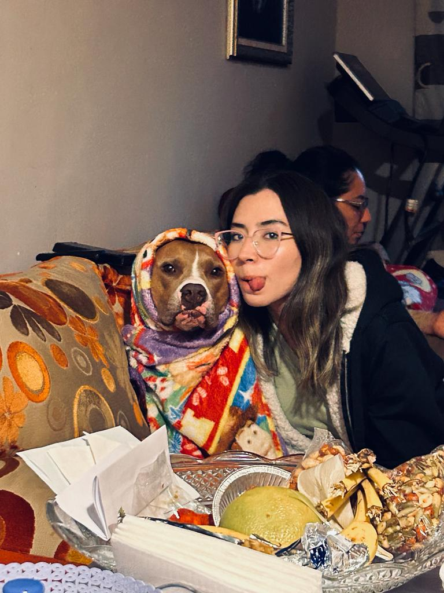
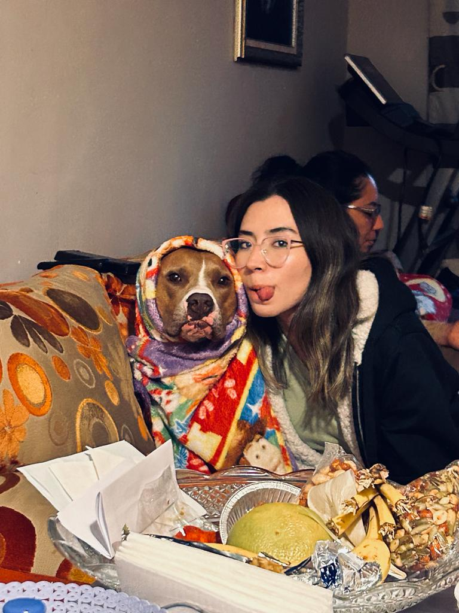
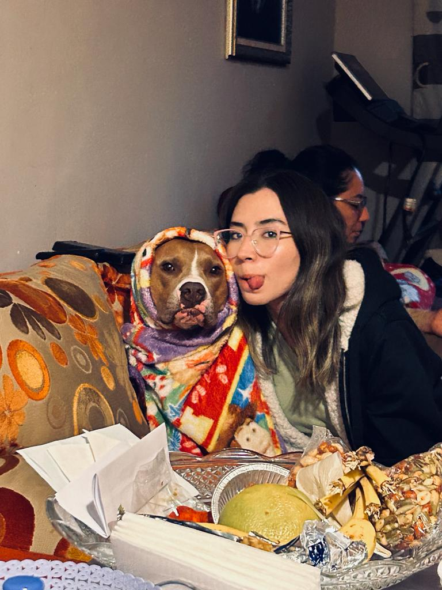
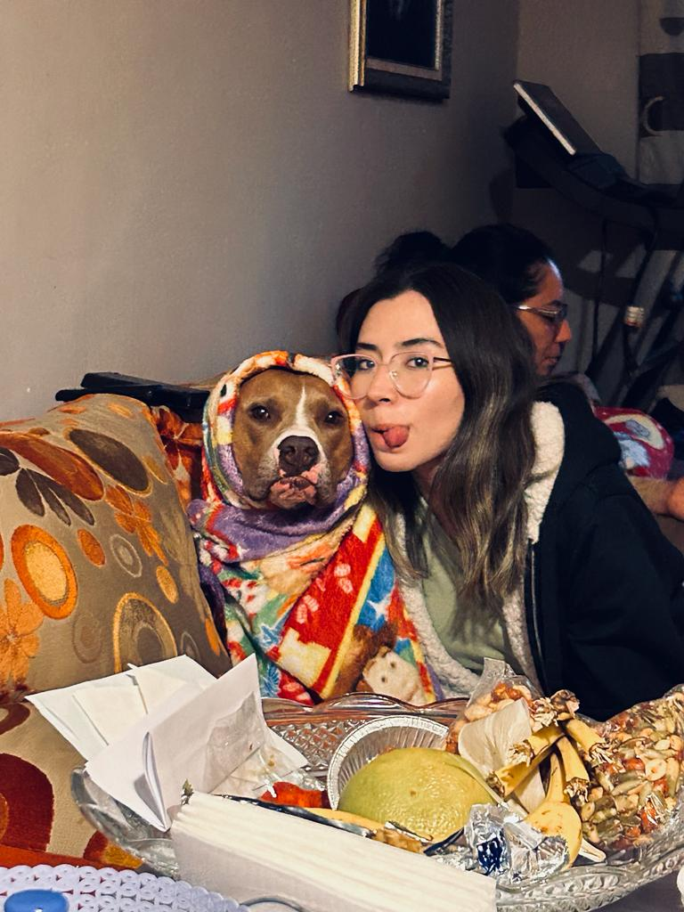

 

como podrás notar este sitio web se trata sobre ti, o mejor dicho te compartiré un poquito de o que yo veo en ti y de los momentos que pasamos juntos peque. ahora bien, te presento una pequeña galería de algunas fotos que me gustan mucho y digo solo algunas porque si pongo todas no cabrían en una sola página web, jsjsjs así que espero te guste esta pequeña carta Virtual ahora sí comencemos
podrás ver me tome el tiempo y la libertad de hacerte este lindo presente
junto con un agradecimiento y una felicitación, ya que a lo largo de un año y 3 meses
hemos convivido tanto como pareja, amigos, amantes, compañeros, en fin, hemos estado
juntos de todas las maneras y formas posibles. Ahora si empecemos...
Desde el momento en el que te conocí fue como ver las maravillas del mundo en frente de mí,
no te voy a negar que cuando empezó nuestra cita si me sentí chiquito (jsjsjs) por muchas cosas,
una de ellas fue porque al verte dije "es más bella en persona que en las fotos", "no me lo creo",
literalmente quede flechado, dejemos a un lado el lugar jsjs. Cunado empezaste a platicar
me quede asombrado de la facilidad que tenías al hablar, pero si quede enamorado en la primera cita,
tiempo después sabía que tenía que enamorarte.
durante el tiempo que llevamos juntos puedo decir que Dani es una chica bastante linda, que dijo linda es PERFECTA
ante mis ojos es la chica más tierna, sensible, simpática, cariñosa, glamurosa, romántica, Dani es la mejor creación de la historia.
tendrá defectos, pero eso la hace hermosa y perfecta. simplemente Perfecta así con toda la extensión de la palabra.
¿Qué es algo que me guste de ti?
te has preguntado ¿por qué le gusto a Braulio? o ¿qué tanto me amara Braulio? o te has hecho alguna pregunta similar o parecida?
bueno si tu respuesta fue "no" pues aquí te lo diré, pero si respondiste "si" pero no tienes la respuesta
quédate también que aquí mismo te la daré.
la respuesta es simple pero compleja a la vez, quizá es tu forma de ser, la manera en la que miras
las cosas que te gustan, el cómo las cuidas y le das un lugar especial, o puede ser el cómo me tratas
de una manera linda, tierna y con dulzura, probablemente sea eso, pero es una combinación de muchas cosas
que ni yo mismo puedo explicar. Lo que si te puedo decir es que me gusta desde tu forma de vestir hasta
la forma en la que cepillas tu cabello, yo creo que lo que más me gusta de ti es tu sonrisa, esa sonrisa
que con tan solo sonreír me podrías provocar un infarto, te ves tan linda sonriendo, y solo el imaginarte
sonriendo es como Aaaw, puedo decir que tengo la dicha de poder apreciar tan linda criatura tan espectacular.
y si acepto quién eres pequeña, con todos tus miedos, tus victorias, con todos tus traumas,
tus malos días así bien como tus buenos días incluso con esos días en donde ni siquiera sabes
su es un día bueno o malo.
si pudiera regresar el tiempo lo haría una y mil veces para elegirte a ti. te quiero,
te amo como no tienes una idea o chance y si logras tener una idea jsjs mejor dicho mi amor
por ti es como un límite donde x tiende a infinito, podrás tener una idea de mi amor, pero no
como medirlo y ese es el punto, que sepas cuanto te amo, pero sin saber hasta dónde.
continuando con esta pequeña carta, quisiera hacer énfasis en todos los momentos que
hemos pasado atesoro todos y cada uno así como los lugares que visitamos, y procuro que
en cada lugar que estemos tengamos un lindo recuerdo, tal es el caso de vikingos jsjs que
es nuestro lugar especial, ya hasta somos clientes frecuentes. Conocerte a ti y a Roko fue una bendición.
Por qué conocer a Roko también fue divertido jsjs pensar que ese día iba a ser aperitivo de Roko jsjs
es algo que no olvidare.
Una última cosa más quiero felicitarte por el gran esfuerzo y dedicación que empeñas día con día para salir adelante,
tanto en la parte escolar como en la parte personal, sé que cada día te enfrentas a emociones y/o situaciones de la vida incluso recuerdos
te admiro y quiero que sepas que cunetas conmigo.
no te rindas peque. Te amo.
te escribí algo, te lo dejo a continuación.
No hay palabras para explicarlo, ni hay frases para decirlo. Te amo
por todos los detalles y porque eres tú. Porque mi corazón late por ti
cuando estás cerca y se calma cuando nos separamos. Porque en tus ojos
veo la luz del amor y en tu sonrisa el sol. Porque no hay lugar
en este mundo donde quiero estar más que contigo. Y aunque no sea posible
vivir juntos, quiero compartir conmigo cada momento que pasamos juntos
y así poder recordarlos siempre.
Ese es mi amor por ti, Daniela. Un amor fuerte, constante e
incondicional. Un amor que vive en todo momento de nuestras vidas.
Un amor que nos hace seguir adelante incluso cuando las cosas no salen
como esperábamos. Un amor que nos ayuda a superar cualquier dificultad
y que nos da la fuerza necesaria para seguir adelante.
Quiero ser tu compañero de viaje en esta vida, tu apoyo en momentos
en donde nisiquiera puedas contigo misma o estes a punto de rendirte.
ya para concluir espero te haya gustado esta pequeña carta virtual